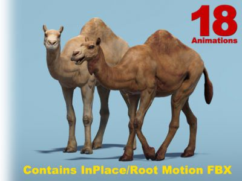

African Animal - Camel (Dromedary): 2.0African Animal - Camel (Dromedary) (size: 92.05Mb) version: 2.0

Description
Price: $25.00.
Publisher: 4toon Studio.
Description:This is a High Poly 3D Model of a Dromedary Camel (Camelus dromedarius) with one hump on its back, in contrast to the two-humped Bactrian Camel, with meshes optimized to Low Poly version:
•Camel Dromedary - HP 8648 tris;
•Camel Dromedary - LP 4604 tris.
•Camel Dromedary - SLP 2536 tris.
Model has 35 bones.
Textures:
•Camel Dromedary - 2 color textures, 1 normal, 1 specular, 1 ambient occlusion maps (all 1k/2k).
Model has 18 UNIQUE animations (InPlace & RootMotion). The Unity project contains TWO[2] FBX Files, one with 'In Place' animations and second with 'Root Motion' animations, which are a GREAT ASSET to this model:
Walk, Run, Idle, LieDown, RestLying, StandUp, Eating Start/Eating/End, FightIdle, Hit Right/Left/Front/Back, Attack Bite/Head/Leg, Death.
E-mail: Graphics@4toonStudio.comExtra Images